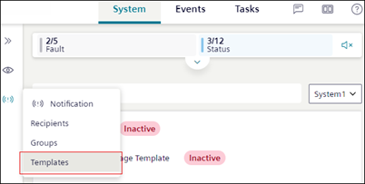

Templates Workspace for Mobile Flex
This section provides reference and background information for handling notification templates in the mobile Flex web app. For related procedures, see the step-by-step section.
To view the Templates workspace, rotate your mobile screen and navigate to Notification > Templates.

Templates Workspace
1 | Notification Template list | Displays the existing list of notification templates with their state from the installed client. |
2 | Search | Allows you to search for a template either by the name or state. |
3 | System drop-down | Displays the Templates for the system. |
4 | State | (Applicable only for Reno Plus users) Allows you to select Active or Inactive state of the message template. |